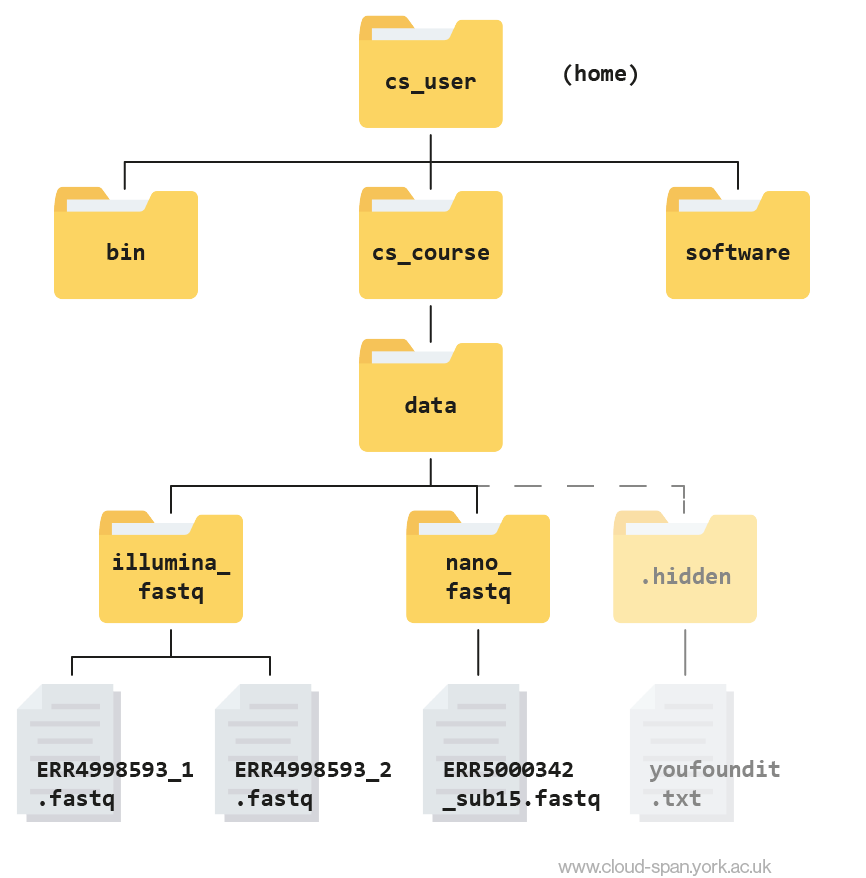
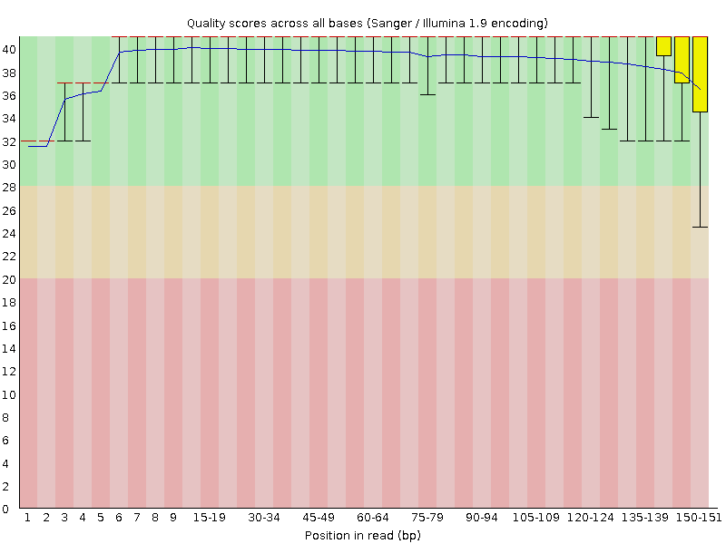
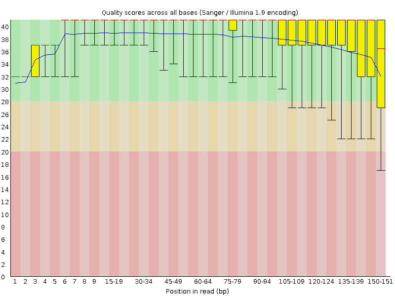
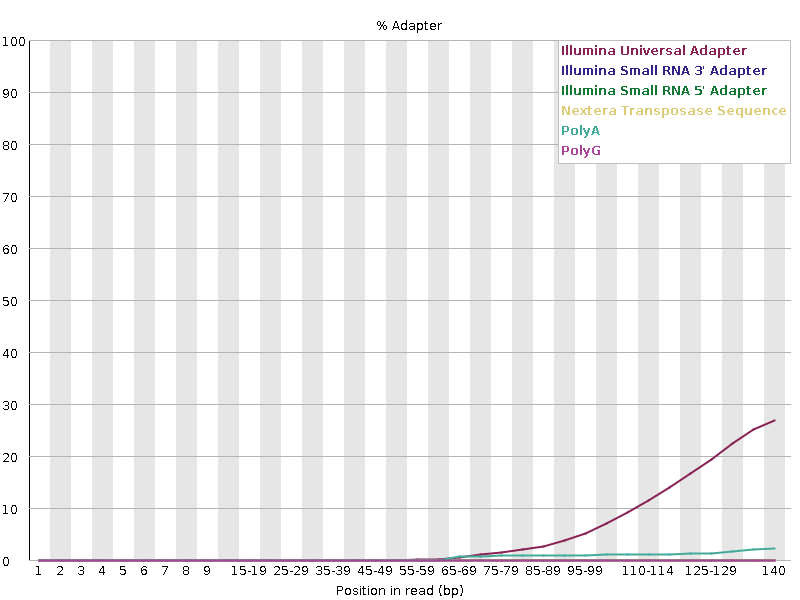
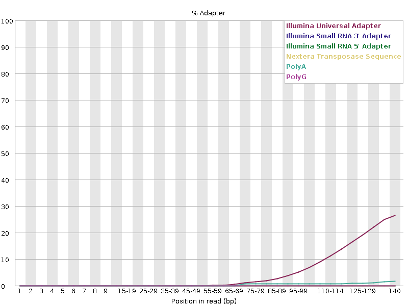

Quality of Raw Reads
Getting started
The first thing we need to do is log in to our cloud instance.
1. Open the cloudspan folder you created for the course
Open your file manager and navigate to the cloudspan folder (hint: we recommended you make the folder in your Desktop directory - but you might have made it somewhere else). If you cannot find the folder, you can remind yourself where it is stored by looking at the absolute path you wrote down in the previous episode.
The folder should contain the login key file we downloaded in the previous episode and nothing else.
2. Right-click and open your machine’s command line interface
Now we can open the command line.
Windows users:
- Right click anywhere inside the blank space of the file manager, then select Git Bash Here. A new window will open - this is your command line interface, also known as the shell or the terminal. It will automatically open with your
cloudspandirectory as the working directory.
- Right click anywhere inside the blank space of the file manager, then select Git Bash Here. A new window will open - this is your command line interface, also known as the shell or the terminal. It will automatically open with your
Mac users, you have two options:
EITHER: Open Terminal in one window and type
cdfollowed by a space. Do not press enter! Now open Finder in another window. Drag and drop thecloudspanfolder from the Finder to the Terminal. You should see the file path leading to yourcloudspanfolder appear. Now press enter to navigate to the folder.OR: Open Terminal and type
cdfollowed by the absolute path that leads to yourcloudspanfolder. Press enter.
3. Login into your instance
Code
ssh -i login-key-instanceNNN.pem csuser@instanceNNN.cloud-span.aws.york.ac.ukBe sure to replace NNN with your own number, twice.
Reminder: our file structure
Before we start, here’s a reminder of what our file structure looks like as a hierarchy tree:

Keep this in mind as we continue to navigate the file system, and don’t hesitate to refer back to it if needed.
Before we can start working properly with our data we need to do some quality control to make sure our data is as high quality as possible. There are lots of ways errors could be introduced during the sampling and sequencing process, such as RNA becoming degraded or bases being called incorrectly.
Quality control (QC) has two main steps: - FastQC to examine the quality of the reads - Cutadapt to trim off low quality bases and remove adapter sequences
Quality control using FastQC
In previous lessons we had a look at our data files and found they were in FASTQ format, a common format for sequencing data. We used grep to look for ‘bad reads’ containing more than three consecutive Ns and put these reads into their own text file.
This could be rather time consuming and is very nuanced. Luckily, there’s a better way! Rather than assessing every read in the raw data by hand we can use FastQC to visualise the quality of the whole sequencing file.
About FastQC
Rather than looking at quality scores for each individual read, FastQC looks at quality collectively across all reads within a sample. The image below shows one FastQC-generated plot that indicates a very high quality sample:

The x-axis displays the base position (bp) in the read, and the y-axis shows quality scores. In this example, the sample contains reads that are 40 bp long.
Each position has a box-and-whisker plot showing the distribution of quality scores for all reads at that position.
- The horizontal red line indicates the median quality score.
- The yellow box shows the 1st to 3rd quartile range (this means that 50% of reads have a quality score that falls within the range of the yellow box at that position).
- The whiskers show the absolute range, which covers the lowest (0th quartile) to highest (4th quartile) values.
- The plot background is also color-coded to identify good (green), acceptable (yellow), and bad (red) quality scores.
Now let’s take a look at a quality plot on the other end of the spectrum.

Here, we see positions within the read in which the boxes span a much wider range. Also, quality scores drop quite low into the “bad” range, particularly on the tail end of the reads. The FastQC tool produces several other diagnostic plots to assess sample quality, in addition to the one plotted above.
Getting started with FastQC
First, we are going to organise our results by creating a directory to contain the output of all of the results we generate in this course.
The mkdir command can be used to make a new directory. Using the -p flag for mkdir allows it to create a new directory, even if one of the parent directories doesn’t already exist. It also suppresses errors if the directory already exists, without overwriting that directory.
Return to your home directory (/home/csuser):
Code
cd Create the directories results inside cs_course:
Code
mkdir -p cs_course/resultsYou might want to use ls to check those directories have been made.
We are going to have lots of outputs so it makes sense to organise them with some more subdirectories. Let’s make one called qc (for quality control).
Code
mkdir -p cs_course/results/qcNow we have created the directories we are ready to start with quality control.
FastQC has been installed on your instance. We can run it with the -h flag to display the help documentation and find out what parameters are available:
Code
fastqc -hOutput
FastQC - A high throughput sequence QC analysis tool
SYNOPSIS
fastqc seqfile1 seqfile2 .. seqfileN
fastqc [-o output dir] [--(no)extract] [-f fastq|bam|sam]
[-c contaminant file] seqfile1 .. seqfileN
DESCRIPTION
FastQC reads a set of sequence files and produces from each one a quality
control report consisting of a number of different modules, each one of
which will help to identify a different potential type of problem in your
data.
If no files to process are specified on the command line then the program
will start as an interactive graphical application. If files are provided
on the command line then the program will run with no user interaction
required. In this mode it is suitable for inclusion into a standardised
analysis pipeline.
The options for the program as as follows:
-h --help Print this help file and exit
-v --version Print the version of the program and exit
-o --outdir Create all output files in the specified output directory.
Please note that this directory must exist as the program
will not create it. If this option is not set then the
output file for each sequence file is created in the same
directory as the sequence file which was processed.
--casava Files come from raw casava output. Files in the same sample
group (differing only by the group number) will be analysed
as a set rather than individually. Sequences with the filter
flag set in the header will be excluded from the analysis.
Files must have the same names given to them by casava
(including being gzipped and ending with .gz) otherwise they
won't be grouped together correctly.
--nano Files come from nanopore sequences and are in fast5 format. In
this mode you can pass in directories to process and the program
will take in all fast5 files within those directories and produce
a single output file from the sequences found in all files.
--nofilter If running with --casava then don't remove read flagged by
casava as poor quality when performing the QC analysis.
--extract If set then the zipped output file will be uncompressed in
the same directory after it has been created. By default
this option will be set if fastqc is run in non-interactive
mode.
-j --java Provides the full path to the java binary you want to use to
launch fastqc. If not supplied then java is assumed to be in
your path.
--noextract Do not uncompress the output file after creating it. You
should set this option if you do not wish to uncompress
the output when running in non-interactive mode.
--nogroup Disable grouping of bases for reads >50bp. All reports will
show data for every base in the read. WARNING: Using this
option will cause fastqc to crash and burn if you use it on
really long reads, and your plots may end up a ridiculous size.
You have been warned!
--min_length Sets an artificial lower limit on the length of the sequence
to be shown in the report. As long as you set this to a value
greater or equal to your longest read length then this will be
the sequence length used to create your read groups. This can
be useful for making directly comaparable statistics from
datasets with somewhat variable read lengths.
-f --format Bypasses the normal sequence file format detection and
forces the program to use the specified format. Valid
formats are bam,sam,bam_mapped,sam_mapped and fastq
-t --threads Specifies the number of files which can be processed
simultaneously. Each thread will be allocated 250MB of
memory so you shouldn't run more threads than your
available memory will cope with, and not more than
6 threads on a 32 bit machine
-c Specifies a non-default file which contains the list of
--contaminants contaminants to screen overrepresented sequences against.
The file must contain sets of named contaminants in the
form name[tab]sequence. Lines prefixed with a hash will
be ignored.
-a Specifies a non-default file which contains the list of
--adapters adapter sequences which will be explicity searched against
the library. The file must contain sets of named adapters
in the form name[tab]sequence. Lines prefixed with a hash
will be ignored.
-l Specifies a non-default file which contains a set of criteria
--limits which will be used to determine the warn/error limits for the
various modules. This file can also be used to selectively
remove some modules from the output all together. The format
needs to mirror the default limits.txt file found in the
Configuration folder.
-k --kmers Specifies the length of Kmer to look for in the Kmer content
module. Specified Kmer length must be between 2 and 10. Default
length is 7 if not specified.
-q --quiet Supress all progress messages on stdout and only report errors.
-d --dir Selects a directory to be used for temporary files written when
generating report images. Defaults to system temp directory if
not specified.
BUGS
Any bugs in fastqc should be reported either to simon.andrews@babraham.ac.uk
or in www.bioinformatics.babraham.ac.uk/bugzilla/This documentation tells us that to run FastQC we use the format fastqc seqfile1 seqfile2 .. seqfileN. Running the command will produce some files. By default, these are placed in the working directory from where you ran the command. We will use the -o option to specify a different directory for the output instead.
FastQC can accept multiple file names as input so we can use the *.fastqc wildcard to run FastQC on both of the FASTQ files at the same time.
First, navigate to your cs_course/ directory.
Code
cd ~/cs_courseNow you can enter the command, using -o to tell FastQC to put its output files into our newly-made qc/ directory. We’ll also use the -t flag to speed up the process by telling FastQC to run on 8 threads (processing cores).
You might be wondering why we’re running our command from the cs_course directory and not the place where the data is stored (~/cs_course/data/raw_reads/), or where we want our outputs to end up (~/cs_course/results/qc/). The reason is that it’s best practice not to run commands from the same folder as your data in case you accidentally do something which would overwrite your data files. From cs_course we can easily “see” both our data and results directories to refer to them with local paths.
Over the rest of the course we will be moving all over the file tree to look at files but will always return to ~/cs_course to run commands. We encourage you to do the same in your own work!
Code
fastqc data/raw_reads/*.fastq -o results/qc/ -t 8Press enter and you will see an automatically updating output message telling you the progress of the analysis. It should start like this:
Output
Started analysis of SRR6820491_1.fastq
Approx 5% complete for SRR6820491_1.fastq
Approx 10% complete for SRR6820491_1.fastq
Approx 15% complete for SRR6820491_1.fastq
Approx 20% complete for SRR6820491_1.fastq
Approx 25% complete for SRR6820491_1.fastq
Approx 30% complete for SRR6820491_1.fastqIn total, it should take around ten minutes for FastQC to run on our fastq files (however, this will depend on the size and number of files you give it). When the analysis completes, your prompt will return. So your screen will look something like this:
Output
Approx 75% complete for SRR6820491_2.fastq
Approx 80% complete for SRR6820491_2.fastq
Approx 85% complete for SRR6820491_2.fastq
Approx 90% complete for SRR6820491_2.fastq
Approx 95% complete for SRR6820491_2.fastq
Analysis complete for SRR6820491_2.fastq
$Looking at FastQC outputs
The FastQC program has created four new files (two for each .fastq file) within our results/qc/ directory. We can see them by listing the contents of the qc folder
Code
ls results/qc/Output
SRR6820491_1_fastqc.html SRR6820491_1_fastqc.zip SRR6820491_2_fastqc.html SRR6820491_2_fastqc.zip For each input FASTQ file, FastQC has created a .zip file and a .html file. The .zip file extension indicates that this is actually a compressed set of multiple output files. A summary report for our data is in the the .html file.
If we were working on our local computers, we’d be able to look at each of these HTML files by opening them in a web browser.
However, these files are currently sitting on our remote AWS instance, where our local computer can’t see them. And, since we are only logging into the AWS instance via the command line, it doesn’t have any web browser setup to display these files either.
So the easiest way to look at these webpage summary reports will be to transfer them to our local computers (i.e. your laptop).
To do this we will use the scp command. scp stands for ‘secure copy protocol’, and is a widely used UNIX tool for moving files between computers. You must run scp in your local terminal in your laptop.
The scp command takes this form:
Code
scp <file I want to copy<where I want the copy to be placed>You need to start a second terminal window that is not logged into the cloud instance and ensure you are in your cloudspan directory. This is important because it contains your .pem file, which will allow the scp command access to your AWS instance to copy the file.
- Open your file manager and navigate to the
cloudspanfolder (which should contain the login key file) - Open your machine’s command line interface:
- Windows users: Right click anywhere inside the blank space of the file manager, then select Git Bash Here.
- Mac users: Open Terminal and type
cdfollowed by the absolute path that leads to yourcloudspanfolder. Press enter.
- Check that you are in the right folder using
pwd
Now use scp to download the file. We need to add in our .pem file, like when we log in, and we’ll also use the symbol . (this directory) to tell the scp command where to deposit the downloaded files.
The command will look something like:
Code
scp -i login-key-instanceNNN.pem csuser@instanceNNN.cloud-span.aws.york.ac.uk:~/cs_course/results/qc/*_fastqc.html .Remember to replace NNN with your instance number.
As the file is downloading you will see an output like:
Output
SRR6820491_1_fastqc.html 100% 543KB 1.8MB/s 00:00
SRR6820491_2_fastqc.html 47% 539KB 1.8MB/s 00:00 Once the files have downloaded, use File Explorer (Windows) or Finder (Mac) to find the files and open them - they should open up in your browser.
If you had trouble downloading and viewing the files you can view them here: SRR6820491_1_fastqc.html and SRR6820491_2_fastqc.html
First we will look at the “Per base sequence quality” graphs for SRR6820491_1.fastq and SRR6820491_2.fastq.
| SRR6820491_1.fastq | SRR6820491_2.fastq |
|---|---|
|  |  |
The x-axis displays the base position in the read, and the y-axis shows quality scores. The blue line represents the mean quality across samples.
In SRR6820491_1 (the forward reads) the overall quality is fairly high, although it seems to be lower at the start and end of some reads. At the end of the read in particular there appears to be quite a bit of variation.
In SRR6820491_2 (reverse reads) the quality is much more variable though the mean quality remains high. Some reads are dipping into the medium and low quality sections towards the end.
We definitely want to do some trimming to make sure the lower quality bases are removed from our reads. First though, we should also have a look at the “Adapter Content” graph which will show us where adapter sequences occur in the reads.
Adapter sequences are short sequences that are added to the sample to aid during the preparation of the DNA library. They therefore don’t tell us anything biologically important and should be removed if they are present in high numbers. They might also be removed in the case of certain applications, such as when the base sequence needs to be particularly accurate.
| SRR6820491_1.fastq | SRR6820491_2.fastq |
|---|---|
|  |  |
These graphs show us that a high proportion of our reads contain adapters, so we’ll need to trim these out too. Helpfully, FastQC has identified that the adapters present are Illumina Universal adapters, so we can easily find out what the sequence to trim out will be.
Trimming reads
So, we’ve looked at our read files and discovered that some of the bases are low quality and a high proportion of them still contain adapters. Now we’ll learn how to use a program called Cutadapt to filter poor quality reads and trim poor quality bases.
Cutadapt Options
Cutadapt has a variety of options to trim your reads. If we run the following command, we can see some of our options.
Code
cutadapt -hThere are many parameters here so we will just show the top of the output which explains the usage, but you should look through and familiarise yourself with the options available. Importantly it shows you what are the required parameters and also the version of the software you have used which is important to keep note of. You should always record what versions of software you have used and what parameters you ran the software with in order to make your analysis reproducible.
Output
cutadapt version 3.5
Copyright (C) 2010-2021 Marcel Martin <marcel.martin@scilifelab.se>
cutadapt removes adapter sequences from high-throughput sequencing reads.
Usage:
cutadapt -a ADAPTER [options] [-o output.fastq] input.fastq
For paired-end reads:
cutadapt -a ADAPT1 -A ADAPT2 [options] -o out1.fastq -p out2.fastq in1.fastq in2.fastqThis output shows us that there is a different usage for single end or paired end reads. For single ended data we need to use:
-ato specify the sequence of the adaptor to be removed-oto specify the name of the trimmed output- the name of the raw sequence we want to be trimmed.
For paired end data, Cutadapt expects: - two adaptor sequences for trimming, specified by -a and -A - two (different) names for the trimmed outputs, specified by -o and -p - the two files to be trimmed.
There are lots of other options to add too, but these are the compulsory ones.
The first input file typically contains a _1 or _R1 in the name. The second input file typically contains a _2 or _R2 in the name.
For more information about the arguments used see the Cutadapt documentation
Running Cutadapt
To begin, navigate to your cs_course directory:
Code
cd ~/cs_course/We need to make a new directory to keep our trimmed reads in. We’ll put it inside the data directory on the same level as our existing raw_reads directory.
Code
mkdir data/trimmed_readsWe should also make a directory to keep our Cutadapt log file in, in case we need to look back at it in the future. We’ll put that inside results/
Code
mkdir results/cutadaptNow we can start constructing our command. Here are the flags and options we’ll be using:
| flag/option | meaning |
|---|---|
-q 20 |
Bases need to have a quality phred score of at least 20 to be maintained |
-a AGATCGGAAGAGCACACGTCTGAACTCCAGTCA |
The adapter sequence to trim from the forward reads, based on Illumina’s Universal Adapters |
-A AGATCGGAAGAGCGTCGTGTAGGGAAAGAGTGT |
The sequence to trim from the reverse reads, also based on Illumina’s Universal Adapters |
-o <FILEPATH> |
The name of the output of the trimmed forward reads |
-p <FILEPATH> |
The name of the output of the trimmed reverse reads |
-m 150 |
Remove reads shorter than 150bp after trimmming has occured |
-j 8 |
Run the process on 8 threads (to speed up the process) |
By default, Cutadapt will print updates on its progress to the console (like we saw with FastQC). It will also print a summary of how many reads were trimmed or kept, and other useful information about its process. Ideally we want to keep a copy of this summary so we can refer to it in future.
We’ll therefore add an instruction to the end of the command telling Cutadapt to ‘redirect’ its console output to a file. The way to do this is &> <filepath>. This will ensure we keep a good record of what we’ve been doing. Be careful though! If you have an error in your command you’ll have to look inside the log to find out what the error is, as it won’t get printed to the console like it usually would.
This command is quite long! When typing a long command into your terminal, you can use the \ character to separate code chunks onto separate lines. This can make your code more readable.
Here’s what our final command looks like:
Code
cutadapt -q 20 \
-a AGATCGGAAGAGCACACGTCTGAACTCCAGTCA \
-A AGATCGGAAGAGCGTCGTGTAGGGAAAGAGTGT \
-o data/trimmed_reads/SRR6820491_1.trim.fastq \
-p data/trimmed_reads/SRR6820491_2.trim.fastq \
-m 150 \
-j 8 \
data/raw_reads/SRR6820491_1.fastq \
data/raw_reads/SRR6820491_2.fastq \
&> results/cutadapt/SRR6820491_fastq.logThe adapter sequences we provide are very long, so you may want to copy and paste these sequences from this page into your command. However, you cannot paste in the shell using Ctrl + V like you can usually. Instead you have two options:
- right click and select
paste - hover the mouse pointer over the terminal window and press the mouse middle button
The same is true for copying in the shell - Ctrl + C will not work. Instead, you will need to highlight whatever you want to copy, right click and select copy.
You can copy and paste the full command if you wish, but we recommend typing it out yourself to help you remember what each of the flags does.
When you have submitted the command, your prompt will disappear for a couple of minutes. When it comes back, your command has finished running.
Let’s open up our log file and see the summary.
Code
less results/cutadapt/SRR6820491_fastq.logOutput
This is cutadapt 2.8 with Python 3.8.10
Command line parameters: -q 20 -a AGATCGGAAGAG -A AGATCGGAAGAG -o data/trimmed_reads/SRR6820491_1.trim.fastq -p data/trimmed_reads/SRR6820491_2.trim.fastq -m 150 -j 8 data/raw_reads/SRR6820491_1.fastq data/raw_reads/SRR6820491_2.fastq
Processing reads on 8 cores in paired-end mode ...
Finished in 70.26 s (5 us/read; 12.04 M reads/minute).
=== Summary ===
Total read pairs processed: 14,099,347
Read 1 with adapter: 4,874,180 (34.6%)
Read 2 with adapter: 4,716,762 (33.5%)
Pairs that were too short: 5,913,632 (41.9%)
Pairs written (passing filters): 8,185,715 (58.1%)
Total basepairs processed: 4,258,002,794 bp
Read 1: 2,129,001,397 bp
Read 2: 2,129,001,397 bp
Quality-trimmed: 46,148,219 bp (1.1%)
Read 1: 11,786,248 bp
Read 2: 34,361,971 bp
Total written (filtered): 2,470,608,528 bp (58.0%)
Read 1: 1,235,692,634 bp
Read 2: 1,234,915,894 bpUse the output from your Cutadapt command to answer the following questions.
- How many reads had adapters in the R1 reads?
- What total percent of reads were trimmed/filtered?
- 4,874,180 (34.6%)
- 58%
We can confirm that we have our output files:
Code
cd data/trimmed_reads
lsOutput
SRR6820491_1.trim.fastq SRR6820491_2.trim.fastqGreat! Now we have some high quality samples to work with as we move onto our next step: filtering out ribosomal RNA.
Now that our samples have gone through quality control, they should perform better on the quality tests run by FastQC. Go ahead and re-run FastQC on your trimmed FASTQ files and visualise the HTML files to see whether your per base sequence quality is higher after trimming.
Start by making a new folder inside your cutadapt directory to keep the FastQC outputs in.
Code
cd ~/cs_course
mkdir results/cutadapt/trimmed_fastqcNow you can run FastQC on your trimmed reads.
Code
fastqc data/trimmed_reads/*.fastq -o results/cutadapt/trimmed_fastqc -t 8In the terminal on your local machine (not the one logged into the AWS instance) use SCP to download the files.
Code
scp -i login_key_instanceNNN.pem csuser@instanceNNN.cloud-span.aws.york.ac.uk:/home/csuser/cs_course/results/cutadapt/trimmed_fastqc/*.html .Then take a look at the html files in your browser.
After trimming and filtering, our overall quality is higher with no quality scores dipping into the red (low quality) zone. We now have a distribution of sequence lengths, and most of the sequences contain no adapters. Some of the metrics are still marked as “failed” (have a red cross next to them) but none that are relevant to our workflow. Cutadapt has worked well!